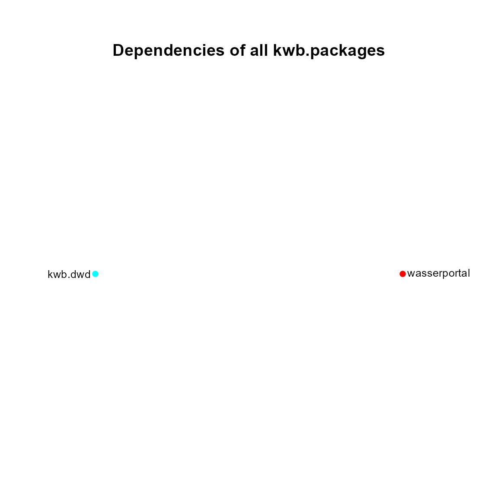

The package “kwb.package” has been developed when the KWB packages
were not yet on GitHub but on KWB’s internal Subversion server. That
time, it was quite complicated to install KWB packages, especially when
a package was depending on further KWB packages. Things got simpler when
we moved our packages to GitHub and could use the
install_github() function from the “remotes” package to
install our packages. Nevertheless, “kwb.package” contains some useful
functions about packages in general, such as functions to analyse or
plot package dependencies. I will demonstrate the usage of some of these
functions here.
Installation
# Install the latest "release" from our R-universe server
install.packages("kwb.package", repos = "https://kwb-r.r-universe.dev")
# Install the development version from GitHub
remotes::install_github("kwb-r/kwb.package@dev")Cook Book Recipes
What packages does a package depend on?
To find out what packages an R package depends on you may use the
function packageDependencies():
# What packages does the package "ggplot2" depend on?
# (including all sub-dependencies)?
kwb.package::packageDependencies("ggplot2")
#> $ggplot2
#> [1] "cli" "glue" "grDevices" "grid" "gtable"
#> [6] "isoband" "lifecycle" "MASS" "mgcv" "rlang"
#> [11] "scales" "stats" "tibble" "vctrs" "withr"
#> [16] "utils" "methods" "graphics" "nlme" "Matrix"
#> [21] "splines" "farver" "labeling" "munsell" "R6"
#> [26] "RColorBrewer" "viridisLite" "fansi" "magrittr" "pillar"
#> [31] "pkgconfig" "lattice" "colorspace" "utf8"
# What packages does the package "kwb.package" itself depend on?
kwb.package::packageDependencies("kwb.package")
#> $kwb.package
#> [1] "gh" "kwb.utils" "magrittr" "mvbutils" "networkD3"
#> [6] "remotes" "withr" "cli" "gitcreds" "glue"
#> [11] "httr2" "ini" "jsonlite" "lifecycle" "rlang"
#> [16] "methods" "utils" "tools" "stats" "graphics"
#> [21] "htmlwidgets" "igraph" "grDevices" "htmltools" "knitr"
#> [26] "rmarkdown" "yaml" "curl" "openssl" "R6"
#> [31] "rappdirs" "vctrs" "Matrix" "pkgconfig" "cpp11"
#> [36] "base64enc" "digest" "fastmap" "evaluate" "highr"
#> [41] "xfun" "grid" "lattice" "askpass" "bslib"
#> [46] "fontawesome" "jquerylib" "tinytex" "sys" "cachem"
#> [51] "memoise" "mime" "sass" "fs"
# Oops!
# What are the direct dependencies, without its sub-dependencies?
kwb.package::packageDependencies("kwb.package", recursive = FALSE)
#> $kwb.package
#> [1] "gh" "kwb.utils" "magrittr" "mvbutils" "networkD3" "remotes"
#> [7] "withr"By what other (installed) packages a package is used?
For a given package the function packageDependencies()
can also find out what other (installed!) packages are depending on it.
I am curious, for example which of my packages are depending on the
“kwb.utils” package:
kwb.package::packageDependencies("kwb.utils", reverse = TRUE)
#> $kwb.utils
#> [1] "kwb.package" "kwb.pkgbuild" "pkgmeta" "kwb.pkgstatus"Quite a lot! Does the recursive argument
(TRUE by default) make any difference here?
kwb.package::packageDependencies("kwb.utils", reverse = TRUE, recursive = FALSE)
#> $kwb.utils
#> [1] "kwb.package" "kwb.pkgbuild" "pkgmeta"No. Is it the case for other packages, e.g. the “dplyr” package?
kwb.package::packageDependencies("dplyr", reverse = TRUE, recursive = TRUE)
#> $dplyr
#> [1] "kwb.pkgstatus" "pkgmeta" "plotly" "tidyr"
kwb.package::packageDependencies("dplyr", reverse = TRUE, recursive = FALSE)
#> $dplyr
#> [1] "kwb.pkgstatus" "pkgmeta" "plotly" "tidyr"Yes.
How can I visualise package dependencies?
packages <- c("wasserportal", "kwb.dwd")
dependencies <- kwb.package::packageDependencies(packages, recursive = FALSE)
par(mar = c(3, 0, 6, 0), xpd = TRUE)
kwb.package::plotAllDependencies(dependencies, for.each = FALSE)
There are some packages that are used by both, “wasserportal” and “kwb.dwd”.
Which versions of CRAN packages exist?
kwb.package::cranVersions("magrittr")
#> package version date date_type
#> 1 magrittr 1.0.0 2014-02-25 last_modified
#> 2 magrittr 1.0.1 2014-05-15 last_modified
#> 3 magrittr 1.5 2014-11-22 last_modified
#> 4 magrittr 2.0.1 2020-11-17 last_modified
#> 5 magrittr 2.0.2 2022-01-26 last_modified
#> 6 magrittr 2.0.3 2022-03-30 published
#> package_source_url
#> 1 https://cran.r-project.org/src/contrib/Archive/magrittr/magrittr_1.0.0.tar.gz
#> 2 https://cran.r-project.org/src/contrib/Archive/magrittr/magrittr_1.0.1.tar.gz
#> 3 https://cran.r-project.org/src/contrib/Archive/magrittr/magrittr_1.5.tar.gz
#> 4 https://cran.r-project.org/src/contrib/Archive/magrittr/magrittr_2.0.1.tar.gz
#> 5 https://cran.r-project.org/src/contrib/Archive/magrittr/magrittr_2.0.2.tar.gz
#> 6 https://cran.r-project.org/src/contrib/magrittr_2.0.3.tar.gzWhich versions of R packages on GitHub exist?
kwb.package::githubVersions(name = "kwb.utils")
#> Reading KWB-R/kwb.utils
#> package version date author remote
#> 1 kwb.utils 0.2.1 2016-09-06 mrustl github::KWB-R/kwb.utils@v.0.2.1
#> 2 kwb.utils 0.4.0.9000 2018-11-19 hsonne github::KWB-R/kwb.utils@v0.4.0
#> 3 kwb.utils 0.4.4 2019-09-10 mrustl github::KWB-R/kwb.utils@v0.4.4
#> 4 kwb.utils 0.5.0 2019-12-17 hsonne github::KWB-R/kwb.utils@v0.5.0
#> 5 kwb.utils 0.5.1 2020-04-29 hsonne github::KWB-R/kwb.utils@v0.5.1
#> 6 kwb.utils 0.6.0 2020-06-02 hsonne github::KWB-R/kwb.utils@v0.6.0
#> 7 kwb.utils 0.7.0 2020-07-31 hsonne github::KWB-R/kwb.utils@v0.7.0
#> 8 kwb.utils 0.8.0 2021-02-19 hsonne github::KWB-R/kwb.utils@v0.8.0
#> 9 kwb.utils 0.10.0 2022-01-19 hsonne github::KWB-R/kwb.utils@v0.10.0
#> 10 kwb.utils 0.11.0 2022-01-24 hsonne github::KWB-R/kwb.utils@v0.11.0
#> 11 kwb.utils 0.12.0 2022-05-28 hsonne github::KWB-R/kwb.utils@v0.12.0
#> 12 kwb.utils 0.13.0 2023-04-15 hsonne github::KWB-R/kwb.utils@v0.14.0
#> 13 kwb.utils 0.15.0 2024-03-28 hsonne github::KWB-R/kwb.utils@v0.15.0What licences are specified for (installed) packages?
kwb.package::getPackageLicences(kwb.package::systemPackages())